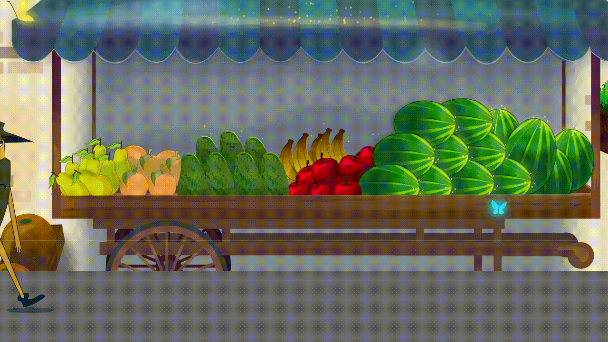

Walk
360 Turnaround

Creado por Defruni, Miguel Naranjo es una naranja la cual tenía el sueño junto con su mejor amigo Luka, de llegar a ser jugos de fruta. Sin embargo, estos son separados cuando llegan al local de frutas, ya que el vendedor del local ve que su mejor amigo no tiene un color amarillo intenso y es tirado a la basura. Miguel es puesto en el stand de frutas y es ahí donde conoce a Rick y a Manzanita y junto a ellos, irá en busca de su mejor amigo, Luka.
Miguel Naranjo
Casabianca
Heroe que rescata a las frutas
Alegre, Hoptimista, Entusiasta, Amable

El principio de estirar y encoger agrega a una animación la idea de peso y flexibilidad. Puede ser aplicado a objetos simples, como un círculo rebotando o algo más complejo como tarjeta o una pantalla completa
La anticipación se usa para preparar al observador para una acción y que la animación se sienta más realista.

La animación directa crea una ilusión de fluidez y dinamismo en el movimiento y es mejor para producir secuencias realistas.

son técnicas de animación que se relacionan estrechamente, ya que ambas ayudan a que el movimiento sea más realista y dé la ilusión de que un objeto se mueve respetando el principio físico de la inercia.

En el mundo real ningún objeto pasa del reposo absoluto al movimiento continuo en un paso: todos los objetos necesitan tiempo para acelerar o disminuir su velocidad

Los arcos operan a lo largo de una trayectoria curva que agrega la ilusión de vida a un objeto animado en acción. Sin arcos, las animaciones se sienten rígidas y mecánicas.

Agregar movimientos adicionales a la acción principal le agrega más vida y la enfatiza en lugar de desviar la atención de ellas.

Las personas recuerdan a los personajes que sienten reales, interesantes y atractivos.

La sincronización en animación se refiere a los momentos (o tiempos) en que ocurre algo en ella. El éxito de una animación depende de cómo se represente el paso del tiempo, ya que una buena sincronización le agrega ritmo y emoción.

La exageración presenta las características y acciones de un objeto de una manera extrema para obtener un efecto cómico o dramático.

El principio de dibujo sólido significa representar formas de manera tridimensional dando la ilusión de volumen y peso en una pantalla plana.
El propósito es dirigir la atención del observador y definir qué es lo más importante en su campo de visión.